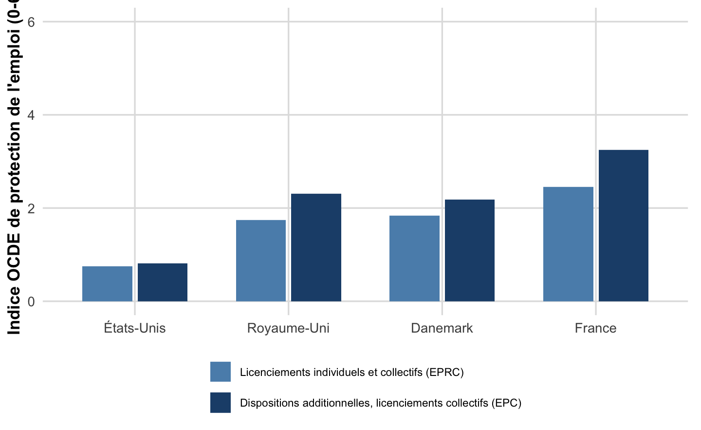
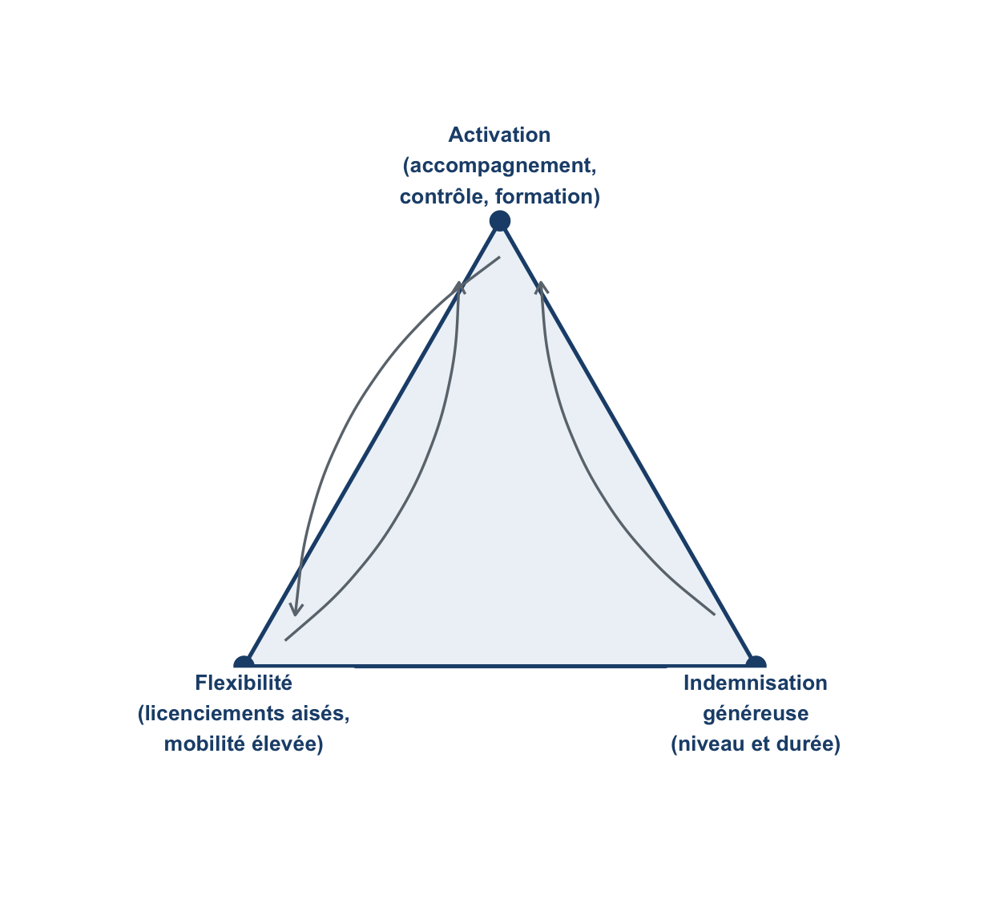
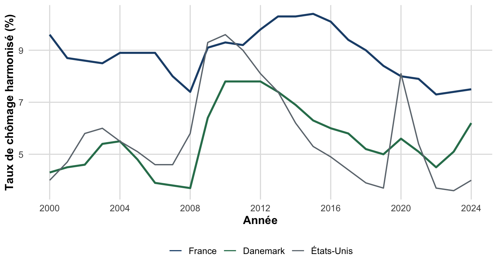
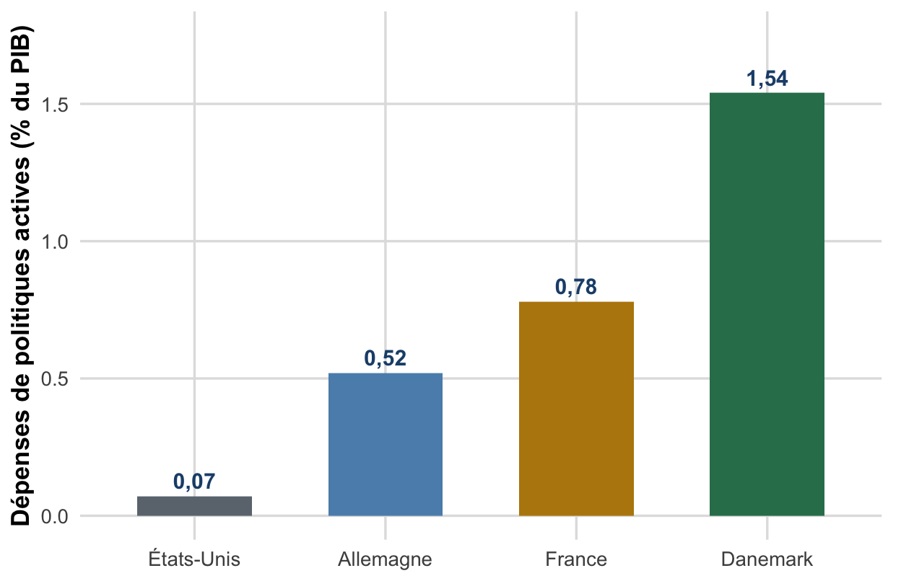
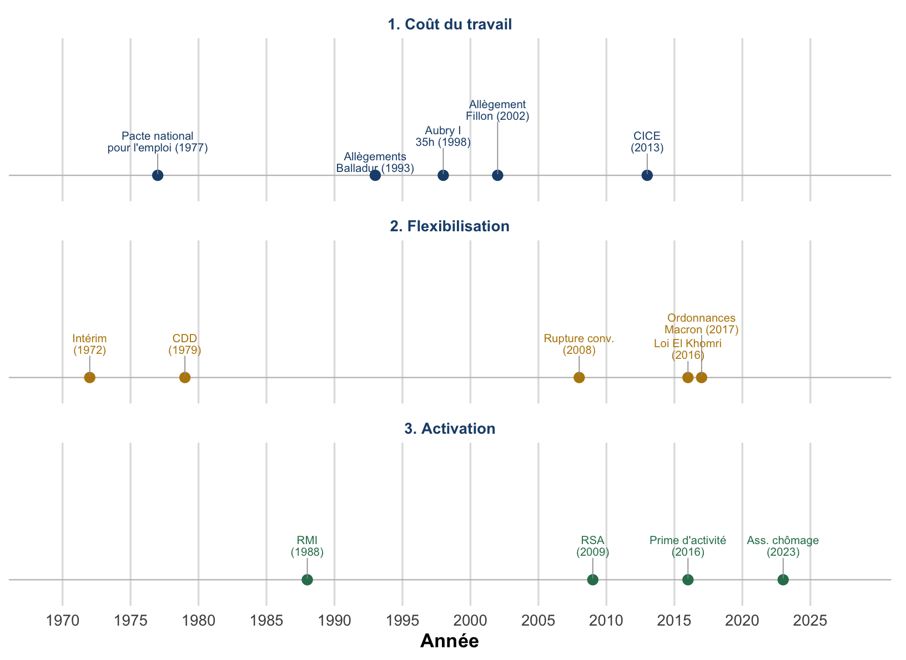
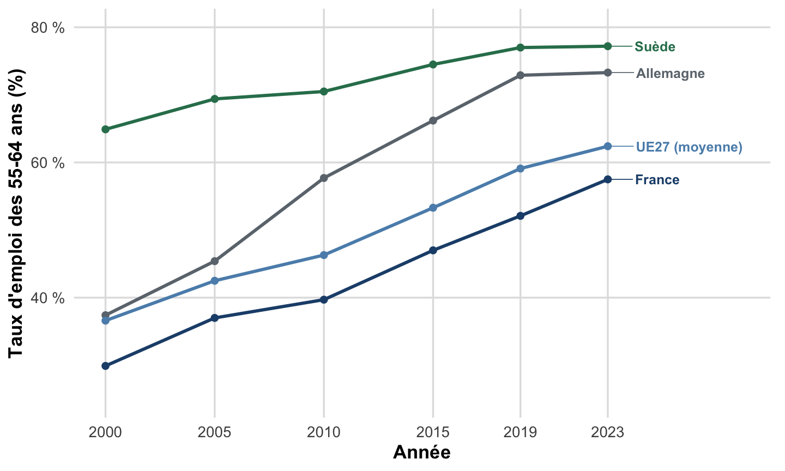
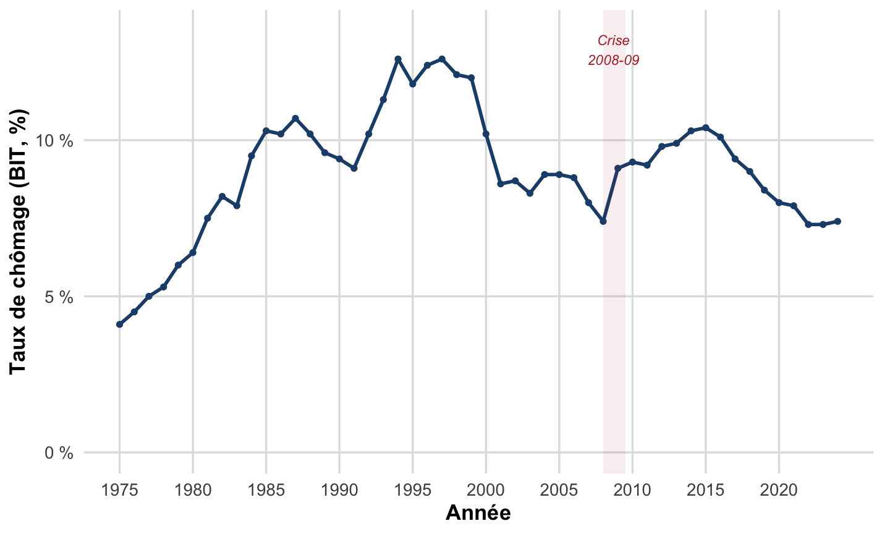
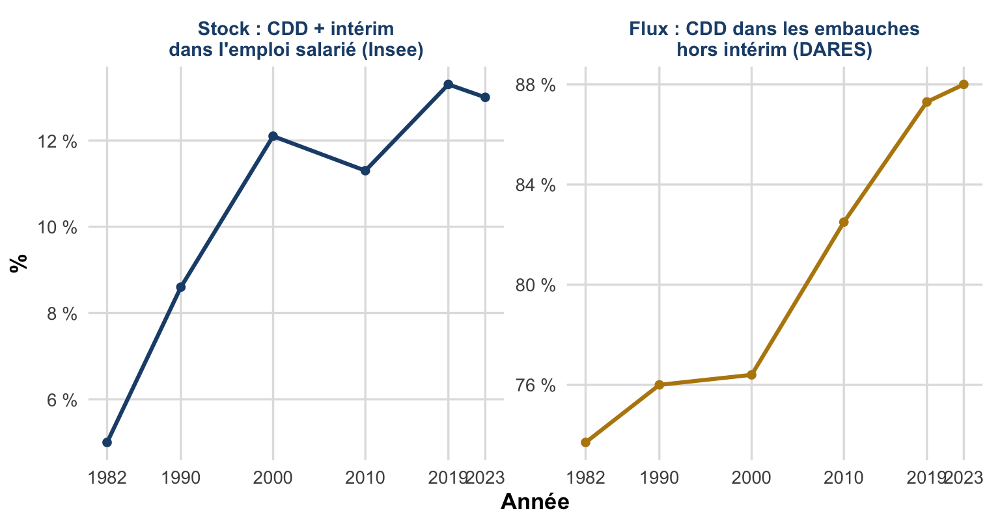
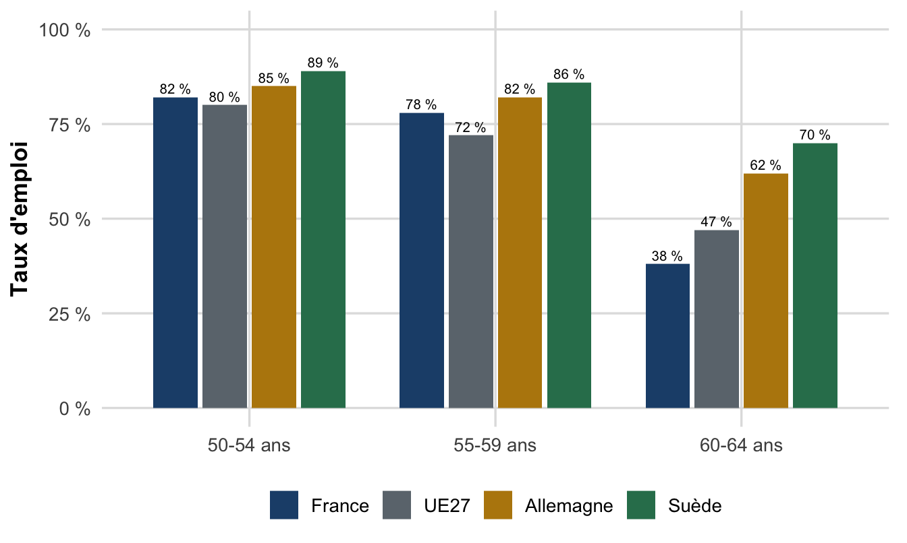

flowchart TD A[Politiques de l'emploi] --> ACT[Politiques actives] A --> PAS[Politiques passives] ACT --> ACT1[Baisse du coût du travail] ACT --> ACT2[Emplois aidés et création d'entreprise] ACT --> ACT3[Amélioration de l'appariement offre-demande] ACT --> ACT4[Flexibilisation] PAS --> PAS1[Indemnisation du chômage] PAS --> PAS2[Incitation au retrait d'activité] PAS --> PAS3[Abaissement de l'âge de la retraite] PAS --> PAS4[Partage du travail]
Chapitre III : Politiques de l’emploi
Le cas français : des grands modèles à la chronologie des réformes
Politiques actives et passives, les trois modèles de marché du travail, la flexisécurité danoise, et quatre décennies de réformes françaises autour de trois axes.
Objectifs de ce chapitre
À l’issue de cette séance, vous saurez :
- Distinguer politiques de l’emploi actives et passives.
- Caractériser les trois modèles de marché du travail (flexibilité, sécurité, flexisécurité) et le « triangle d’or » danois.
- Distinguer les quatre formes de flexibilité (numérique externe, numérique interne, fonctionnelle, salariale) et les différentes notions de sécurité.
- Situer les grandes réformes françaises depuis 1972 sur l’un des trois axes : coût du travail, flexibilisation, activation.
- Relier la trajectoire RMI → RSA → prime d’activité à la notion de trappe à inactivité.
Introduction
Le chapitre II a montré que le chômage résulte de mécanismes multiples : frictions d’appariement, rigidités salariales, insuffisance de la demande. Face à ce diagnostic, les pouvoirs publics disposent d’un ensemble d’instruments : les politiques de l’emploi. Ce chapitre présente d’abord les grands cadres conceptuels qui organisent la réflexion sur ces politiques (Section I), puis retrace, à travers le cas français, comment ces principes se sont traduits en réformes depuis les années 1970 (Section II).
Politiques de l’emploi : ensemble des mesures visant à agir sur le niveau et la structure de l’emploi, en particulier les politiques de lutte contre le chômage. Elles se distinguent des politiques macroéconomiques de relance (chapitre I) en ce qu’elles ciblent le fonctionnement du marché du travail plutôt que la demande agrégée.
Section I : Cadres d’analyse des politiques de l’emploi
1. Politiques actives et politiques passives
On distingue deux grandes catégories de politiques de l’emploi, selon qu’elles cherchent à créer des emplois supplémentaires ou à gérer le chômage existant.
Politiques actives : obtenir une croissance plus riche en emplois. Elles comprennent : inciter les entreprises à embaucher (allègements de charges) ; créer des emplois publics ou aider les chômeurs à créer leur entreprise ; améliorer la rencontre offre/demande de travail (service public de l’emploi, formation) ; introduire davantage de flexibilité.
Politiques passives : rendre le chômage supportable et réduire la population active. Elles comprennent : indemniser les chômeurs ; inciter au retrait d’activité ; abaisser l’âge de la retraite ; partager le travail par la réduction du temps de travail.
Cette distinction recoupe un débat de politique économique. Les politiques passives, en protégeant le revenu des personnes sans emploi, répondent à un objectif de justice sociale (fonction de redistribution au sens de Musgrave, chapitre I), mais peuvent, si elles sont mal calibrées, réduire les incitations au retour à l’emploi : c’est la trappe à inactivité, développée en Section II. Les politiques actives, elles, n’ont d’effet que si le diagnostic sous-jacent est le bon : baisser le coût du travail suppose un chômage classique ; renforcer l’accompagnement suppose un chômage en partie frictionnel (chapitre II).
AvertissementErreur fréquente
Ne pas confondre politique active et politique efficace, ni politique passive et politique inutile. Une indemnisation généreuse mais limitée dans le temps, couplée à un accompagnement, peut favoriser un retour à l’emploi de meilleure qualité en laissant au chômeur le temps de trouver un poste adapté. C’est l’argument même de la flexisécurité, présentée ci-dessous.
2. Trois modèles de fonctionnement du marché du travail
Au-delà des instruments pris isolément, on peut caractériser des modèles nationaux cohérents, combinant un niveau de protection de l’emploi, d’indemnisation du chômage et d’accompagnement des chômeurs.
- Flexibilité (modèle anglo-saxon : États-Unis, Royaume-Uni) : faible protection de l’emploi + assurance chômage peu généreuse + faible accompagnement ⇒ ni les emplois ni les travailleurs ne sont protégés.
- Sécurité (Europe continentale : France) : protection élevée + assurance chômage généreuse + accompagnement limité ⇒ on protège les emplois et les travailleurs, au prix d’une rigidité d’ajustement (hystérèse, chapitre II).
- Flexisécurité (pays nordiques : Danemark) : faible protection + assurance chômage généreuse mais conditionnelle à la recherche active + accompagnement fort ⇒ on ne protège pas les emplois, mais on protège les travailleurs.
| Flexibilité | Sécurité | Flexisécurité | |
|---|---|---|---|
| Protection de l’emploi | Faible | Forte | Faible (licenciements collectifs) |
| Indemnisation | Faible, courte durée | Variable, longue durée | Forte et longue, conditionnelle |
| Accompagnement | Faible | Faible en général | Fort |
Source : d’après Bénassy-Quéré et al. (2017) (Bénassy-Quéré et al. 2017).
Cette typologie éclaire un point essentiel : protection de l’emploi (coût du licenciement) et protection des travailleurs (revenu, employabilité) ne sont pas la même chose. Le modèle danois découple les deux : licenciements faciles, mais niveau de vie et accompagnement élevés pour les personnes qui perdent leur emploi. L’indice OCDE de protection de l’emploi permet de chiffrer ce « Faible » de la Table 1 (Figure 2).

3. La flexisécurité : origine et « triangle d’or »
Flexisécurité (contraction de flexibilité et sécurité) : modèle conjuguant flexibilité pour les employeurs et sécurité pour les chercheurs d’emploi. Principe directeur : protéger les personnes plutôt que les emplois.
Le terme naît des réformes menées aux Pays-Bas et au Danemark en 1999. Le modèle danois est devenu la référence internationale du fait de ses résultats. Sa viabilité repose sur : une grande liberté de licenciement ; une forte mobilité de l’emploi ; une indemnisation très généreuse du chômage ; un effort important de formation ; des structures institutionnelles décentralisées (conseils régionaux, municipalités, job centers) pilotant finement l’accompagnement.
On résume cette logique par le « triangle d’or » danois, dont les trois sommets sont : (1) une grande flexibilité du marché du travail ; (2) un système d’indemnisation généreux ; (3) des politiques actives d’activation, visant à éviter le chômage de longue durée et à contrôler la disponibilité des chômeurs.

En une dizaine d’années, le Danemark a nettement réduit son chômage, restant durablement sous le niveau français (Figure 4). Son taux de pauvreté reste également inférieur à celui de la France. Attention à la mesure : le chiffre de 2,5-3 % parfois cité pour le Danemark est le taux national (« chômage net », Danmarks Statistik, demandeurs d’emploi immédiatement disponibles), non comparable à la mesure harmonisée BIT/OCDE ci-dessous, sur laquelle repose toute comparaison internationale.

Ce triptyque a un coût budgétaire assumé : le Danemark consacre aux politiques actives de l’emploi une part de PIB très supérieure à ses voisins (Figure 5).

ImportantÀ retenir
La flexisécurité n’est pas une simple dérégulation : c’est un triptyque équilibré. Retirer un sommet (flexibiliser sans indemniser, ou indemniser sans activer) rapproche du modèle « flexibilité » pur, avec ses coûts sociaux. Cette cohérence, financée par des prélèvements obligatoires élevés au Danemark, explique la difficulté à « importer » le modèle tel quel ailleurs.
4. Les quatre formes de flexibilité
Le terme « flexibilité » recouvre des réalités différentes selon la marge d’ajustement mobilisée :
- Numérique (ou quantitative) externe : ajuster le volume de travail en faisant varier le nombre de travailleurs (intérim, CDD, temps partiel).
- Numérique interne : ajuster le volume de travail via les heures travaillées plutôt que l’effectif (heures supplémentaires, activité partielle).
- Fonctionnelle (ou qualitative) : exploiter l’organisation du travail (polyvalence, rotation des tâches).
- Salariale : sensibilité des salaires à la conjoncture (cf. WS-PS, chapitre II : plus de flexibilité salariale rapproche du plein-emploi).
flowchart TD F[Flexibilité] --> F1[Numérique externe] F --> F2[Numérique interne] F --> F3[Fonctionnelle] F --> F4[Salariale] F1 --> F1ex[CDD, intérim, temps partiel] F2 --> F2ex[Heures supplémentaires, activité partielle] F3 --> F3ex[Polyvalence, rotation des tâches] F4 --> F4ex[Sensibilité des salaires à la conjoncture]
Chaque réforme française de la Section II peut être rattachée à une ou plusieurs de ces formes : CDD et intérim relèvent du numérique externe, 35 heures et activité partielle du numérique interne, la rupture conventionnelle touche à la fois au numérique externe et à la sécurité des parcours.
5. Les notions de sécurité
Sécurité de l’emploi : possibilité de garder un emploi donné dans une entreprise donnée. Se mesure par l’ancienneté moyenne et par le taux de rotation de la main-d’œuvre : \(\dfrac{\text{embauches} + \text{sorties}}{\text{effectif en début de période}}\).
Plus ce taux est élevé, plus l’emploi est instable. Il est en forte hausse en France depuis vingt ans, sous l’effet de la multiplication des contrats courts (Section II). Trois autres notions structurent le débat :
- Sécurité de l’employabilité : avoir un emploi, pas nécessairement chez le même employeur, la sécurité privilégiée par la flexisécurité.
- Sécurité des revenus : obtenir un revenu tout au long de la vie, y compris hors emploi (protection sociale).
- Sécurité de conciliation : concilier activité rémunérée et autres activités (famille, formation, loisirs).
AstucePour aller plus loin
Ce déplacement (de la sécurité de l’emploi vers la sécurité de la personne) est au cœur du débat contemporain sur la protection sociale : portabilité des droits d’un emploi à l’autre (compte personnel de formation, compte personnel d’activité, 2014-2017).
Section II : Les politiques de l’emploi en France
Cette section retrace, en chronologie commentée, les principales réformes françaises du marché du travail depuis les années 1970. Elles se rattachent à trois axes récurrents, mobilisés par des majorités politiques différentes :
- Baisse du coût du travail : réduire les cotisations patronales, surtout sur les bas salaires (logique néoclassique, chapitre II).
- Flexibilisation de l’emploi : assouplir embauche, licenciement et temps de travail.
- Activation des chômeurs et allocataires de minima sociaux : rendre le retour à l’emploi plus incitatif et mieux accompagné.
Ces trois axes ne sont pas interchangeables : chacun répond à un diagnostic théorique différent, vu au chapitre II, ce qui explique pourquoi ils sont le plus souvent combinés plutôt que substitués l’un à l’autre.
| Axe de réforme | Diagnostic théorique mobilisé (chapitre II) |
|---|---|
| 1. Coût du travail | Modèle néoclassique : salaire réel/coût du travail trop élevé par rapport à l’équilibre de marché |
| 2. Flexibilisation | Modèle WS-PS et appariement : rigidités institutionnelles, frictions dans la rencontre offre-demande |
| 3. Activation | Appariement et trappe à inactivité : incitations individuelles au retour à l’emploi, redistribution |
Source : d’après le CM 10 (Chapitre III, §II).
Cette correspondance permet de situer toute réforme sur son axe avant de juger son efficacité : évaluer une baisse de cotisations à l’aune d’un diagnostic WS-PS, ou une réforme du droit du travail à l’aune d’un diagnostic néoclassique, mène à un contresens.
1. Chronologie commentée (1972-2020)
Les réformes détaillées ci-dessous se répartissent sur trois axes menés en parallèle depuis les années 1970, sans qu’aucun ne suffise, isolément, à résorber le chômage structurel :

Axe 1 : Baisse du coût du travail
- 1977 : Pacte national pour l’emploi : exonération de charges pour l’embauche de jeunes de 16-25 ans.
- 1993 : Loi quinquennale : premiers allègements généraux sur les bas salaires (1,1-1,3 SMIC), dits « Balladur », renforcés en 1995-1996 (« Juppé »).
- 1996 : Loi Robien : baisse de charges pour les entreprises passant de 39h à 32h.
- 1998 : Loi Aubry I : baisse de charges pour le passage aux 35h (jusqu’à 1,7 SMIC).
- 2002 : Allègement Fillon : fusion et extension des dispositifs, jusqu’à 1,6 SMIC.
- 2007 : Loi TEPA : exonération des heures supplémentaires (refiscalisées en 2012).
- 2013 : CICE : crédit d’impôt sur les salaires jusqu’à 2,5 SMIC, assimilable à une « dévaluation fiscale ».
- 2014 : Pacte de responsabilité : allègement de charges en contrepartie d’engagements sur l’emploi.
AstuceActualisation : la bascule du CICE (2019)
En 2019, le CICE a été transformé en baisse pérenne de cotisations patronales, pour clarifier son effet auprès des entreprises. La transition a eu un coût budgétaire élevé (chevauchement du dernier crédit d’impôt et de la nouvelle baisse). Les évaluations du comité de suivi concluent à un effet net sur l’emploi plus modeste qu’attendu, l’essentiel des sommes ayant servi à restaurer les marges, à mettre en regard du modèle néoclassique simple (chapitre II), qui suppose une transmission intégrale coût du travail → emploi.
Axe 2 : Flexibilisation de l’emploi
- 1972 : Introduction de l’intérim en France.
- 1979 : Inscription dans la loi du CDD.
- 1982 : Lois Auroux : accords d’entreprise dérogatoires sur le temps de travail.
- 1986 : Facilitation du recours au temps partiel, CDD et intérim.
- 2008 : Loi de modernisation du marché du travail : création de la rupture conventionnelle, extension des CDD d’usage.
- 2015 : Loi Macron : travail dominical/de nuit, appréciation nationale (non plus au niveau du groupe) des licenciements collectifs, réforme des prud’hommes.
- 2016 : Loi El Khomri (« loi Travail ») : assouplissement du temps de travail, primauté renforcée de l’accord d’entreprise.
- 2017 : Ordonnances Macron : plafonnement des indemnités prud’homales, primauté de l’accord d’entreprise sur la branche, licenciements facilités.
- 2019 : Barème d’indemnisation obligatoire pour licenciement sans cause réelle et sérieuse, validé par la Cour de cassation en 2022.
AstuceActualisation : la réforme de l’assurance chômage 2023-2024
Elle introduit une modulation contracyclique de la durée d’indemnisation : réduite quand le marché du travail est favorable, allongée en période de dégradation. Ce mécanisme relève de l’axe « activation » et se rapproche, partiellement, de la logique danoise d’indemnisation conditionnelle (Section I), sans atteindre le niveau d’accompagnement nordique.
Axe 3 : Activation des chômeurs et des allocataires de minima sociaux
Trappe à inactivité (ou à pauvreté) : situation où la reprise d’un emploi peu rémunéré n’améliore que faiblement le revenu disponible d’un allocataire, du fait de la réduction des prestations sociales à mesure que le revenu d’activité augmente. Le taux marginal de prélèvement implicite peut approcher 100 %, ce qui décourage le retour à l’emploi.
- 1988 : Création du Revenu minimum d’insertion (RMI).
- 2009 : Le RSA remplace le RMI et l’allocation de parent isolé. Il rend le cumul revenu d’activité/allocation plus progressif (réduction de 38 centimes d’allocation par euro gagné, le bénéficiaire conserve 62 centimes de chaque euro gagné, contre une suppression brutale sous le RMI). Il se compose d’un RSA-socle (équivalent du RMI) et d’un RSA-activité (complément pour travailleurs pauvres). La même année, entrée en vigueur du statut d’auto-entrepreneur.
- 2013 : Loi de sécurisation de l’emploi : exonération temporaire de cotisation chômage employeur pour l’embauche en CDI de jeunes de moins de 26 ans.
- 2016 : La prime d’activité remplace le RSA-activité, dont le taux de non-recours était très élevé (de l’ordre de 60-70 % des ayants droit) du fait de sa complexité et de sa stigmatisation. Elle connaît un taux de recours nettement supérieur.
flowchart LR RMI["1988 RMI - Revenu minimum d'insertion"] -->|Trappe à inactivité| RSA["2009 RSA - RSA-socle et RSA-activité"] RSA -->|Non-recours élevé au RSA-activité| PA["2016 Prime d'activité - remplace le RSA-activité"]
AvertissementErreur fréquente
Ne pas confondre RSA-socle (devenu simplement « RSA » après 2016, équivalent du RMI) et RSA-activité (remplacé par la prime d’activité). La trajectoire RMI → RSA → prime d’activité ne supprime pas les minima sociaux : elle fait évoluer leur architecture pour réduire les effets de trappe tout en maintenant un filet de sécurité.
Ce que « trappe à inactivité » veut dire concrètement : c’est la pente du revenu disponible en fonction du revenu d’activité qui compte. Plus la pente est forte, plus reprendre un emploi rapporte (Figure 9).

AstuceActualisation : la réforme des retraites de 2023
Le relèvement de l’âge légal (62 → 64 ans) relève d’une logique d’activation par la marge extensive : retarder la sortie du marché du travail des seniors, plutôt qu’inciter au retour à l’emploi des chômeurs. Elle s’oppose, dans son principe, aux politiques passives des années 1980-1990 qui avaient abaissé l’âge de la retraite pour partager le travail (Section I). Le débat renvoie au taux d’emploi des seniors, structurellement bas en France, et à l’équilibre du système de retraite par répartition.
Le débat renvoie précisément au taux d’emploi des seniors, structurellement bas en France par rapport à ses voisins européens (Figure 10), et à l’équilibre financier du système de retraite par répartition.

2. Synthèse et résultats
Quatre décennies de réformes, mobilisant tour à tour les trois axes, n’ont pas éliminé durablement le chômage de masse en France. Le taux de chômage au sens du BIT connaît des cycles marqués, hausses lors des chocs pétroliers et de la crise de 2008-2009, baisses en phase d’expansion (fin des années 1990, 2017-2019), mais reste, sur longue période, structurellement plus élevé que dans les pays anglo-saxons ou nordiques de comparaison.

Cette persistance illustre un point théorique central du chapitre II : le chômage français a une composante structurelle importante, que les réformes successives (quel que soit l’axe privilégié) n’ont réduite que progressivement. Les évaluations disponibles (DARES, France Stratégie, comité de suivi du CICE) convergent : les baisses de coût du travail ciblées ont des effets positifs mais modestes sur l’emploi non qualifié ; la flexibilisation a surtout développé les contrats courts sans réduire durablement le chômage structurel ; l’activation a amélioré le taux de recours aux prestations sans éliminer toutes les trappes à inactivité.
La flexibilisation illustre bien ce constat nuancé : elle a surtout démultiplié le renouvellement des contrats courts, sans faire progresser à due proportion la part de l’emploi durablement précaire (Figure 12).

ImportantÀ retenir
Les réformes françaises depuis 1972 se lisent selon trois axes : coût du travail, flexibilisation, activation. Aucun, pris isolément, n’a résorbé durablement le chômage structurel : le triangle d’or danois (Section I) suggère que c’est la combinaison cohérente des trois leviers, plutôt que leur usage séquentiel et partiel, qui explique les résultats obtenus par les pays de flexisécurité.
Conclusion
Ce chapitre a articulé deux niveaux de lecture. Au niveau conceptuel, politiques actives/passives et les trois modèles de marché du travail (flexibilité, sécurité, flexisécurité) fournissent une grille pour comparer les systèmes nationaux et leurs arbitrages entre protection de l’emploi et protection des travailleurs. Au niveau appliqué, la chronologie française montre une constance des objectifs (coût du travail, flexibilisation, activation) mais une difficulté durable à les combiner aussi efficacement que le triangle d’or danois. Ce chapitre clôt le programme : il invite à mobiliser conjointement les outils du chapitre I (arbitrages de politique économique) et du chapitre II (diagnostics théoriques du chômage) pour évaluer, de façon critique, l’efficacité des politiques de l’emploi.
Ouverture : population active, marché du travail et réforme des retraites
La réforme des retraites de 2023 (recul progressif de l’âge légal de 62 à 64 ans, allongement de la durée de cotisation à 43 ans) cristallise la tension au cœur des chapitres II et III. Son objectif est la soutenabilité financière du système par répartition, dont l’équilibre dépend du rapport entre cotisants et retraités (Conseil d’orientation des retraites, COR) ; mécaniquement, elle augmente la population active en maintenant les seniors plus longtemps en activité.
Or cette hausse de l’offre de travail se heurte à un marché où le taux d’emploi des 55-64 ans reste structurellement bas en France (environ 58 % en 2023, contre ~63 % dans l’Union européenne, ~74 % en Allemagne et ~77 % en Suède ; Insee, enquête Emploi ; Eurostat), l’écart se creusant surtout après 60 ans, comme le montre la figure ci-dessous.

Deux lectures s’opposent :
- Risque de court terme (demande). Si la demande de travail ne suit pas, l’allongement de la vie active se traduit moins par de l’emploi que par du chômage ou de l’inactivité des seniors (préretraites de fait, invalidité, minima sociaux). Comme le taux de chômage rapporte les chômeurs à la population active, une population active qui augmente sans créations d’emplois suffisantes fait mécaniquement monter le taux de chômage.
- Vision de long terme (offre). Il n’existe pas de « quantité fixe d’emplois » à se partager (sophisme du lump of labour) : à l’échelle internationale, l’emploi des seniors et celui des jeunes sont corrélés positivement, sans éviction (OCDE, Working Better with Age). Une population active plus nombreuse relève le potentiel de croissance (déterminant d’offre, chapitre I).
Enjeu de politique de l’emploi. Pour que le report de l’âge se traduise en emploi et non en chômage, il faut des politiques d’accompagnement : formation continue, lutte contre les discriminations à l’embauche des seniors, aménagement des fins de carrière. Un « index seniors » (obligation de publier des indicateurs d’emploi des seniors) figurait dans la loi de 2023, mais a été censuré par le Conseil constitutionnel. À défaut, le recul de l’âge déplace le coût vers l’assurance chômage et l’invalidité au lieu de créer de l’emploi.
AstuceÀ discuter (TD)
Reculer l’âge de départ est-il d’abord un problème de soutenabilité des retraites (long terme, offre) ou de capacité du marché du travail à employer les seniors (court terme, demande et institutions) ? Les deux dimensions sont indissociables : c’est tout l’objet des politiques de l’emploi étudiées dans ce chapitre.
Sources : Conseil d’orientation des retraites (COR), rapports annuels ; Insee, enquête Emploi ; DARES, publications sur l’emploi des seniors ; OCDE, Working Better with Age ; Conseil d’analyse économique (CAE). Données de taux d’emploi : Eurostat (lfsa_ergan).
NotePour la suite
Le dossier de TD 8 est un entraînement au CC2 (le contrôle continu 2 noté a lieu en séance 8). Il reprend les notions de ce chapitre (flexisécurité, coût du travail, chronologie des réformes) sous forme d’exercices appliqués. Il est recommandé de relire ce résumé en parallèle du chapitre II (modèle néoclassique, modèle WS-PS) pour articuler diagnostic théorique et réponse de politique économique.
NoteSources et remerciements
Résumé rédigé d’après les cours de M. Ouedraogo (2025-2026) et C. Mathonnat (2018-2019), chapitre III, complétés par les ressources DARES (2016), Faut-il baisser le coût du travail ?, Prestations sociales et trappe à inactivité, Réformes du droit du travail en France, et Protection de l’emploi, emploi et chômage.
Les références
Bénassy-Quéré, Agnès, Benoît Coeuré, Pierre Jacquet, et Jean Pisani-Ferry. 2017. Politique économique. 4ᵉ éd. De Boeck Supérieur.